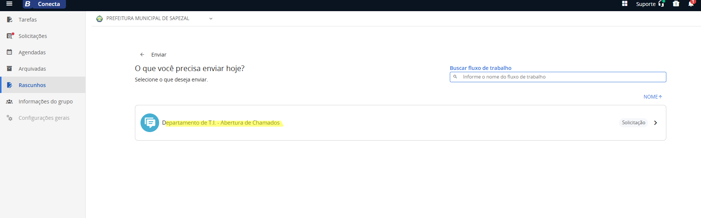
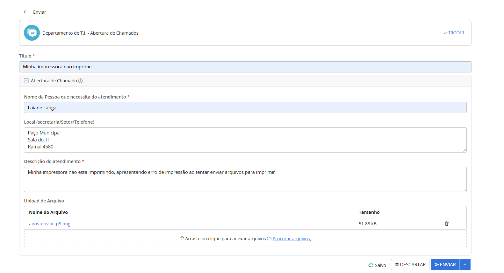
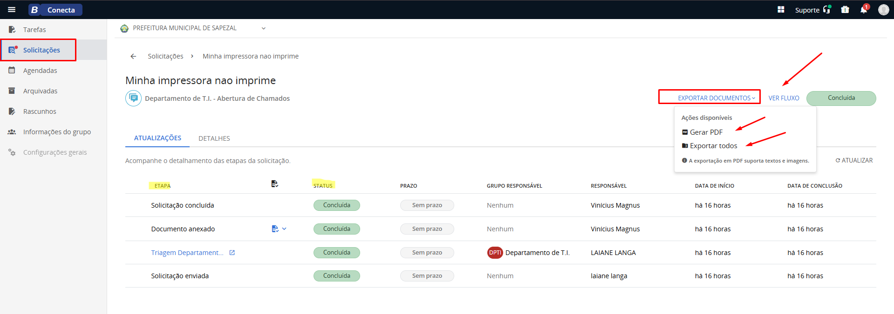

Abertura de Chamado ao T.I. — Conecta (Betha)
Passo a passo para pedir atendimento ao Departamento de T.I., acompanhar o andamento e exportar o documento de atendimento.
1. O que é
Ao entrar no Conecta, você cai na tela de Tarefas. Nela aparecem as tarefas pendentes para você fazer e as que você enviou. A tela de Solicitações funciona de forma parecida e mostra as solicitações enviadas por você.
Este manual mostra como abrir um chamado para o Departamento de T.I. por esse sistema.
2. Passo a passo
1 Abrir uma nova tarefa Usuário
Na tela de Tarefas, clique no botão azul redondo com o sinal de + (canto inferior direito).

2 Escolher o fluxo Usuário
Será aberta a lista de fluxos de trabalho. Clique em Departamento de T.I. - Abertura de Chamados.

3 Preencher o formulário Usuário
O formulário de abertura de chamado será exibido. Preencha as informações (veja a tabela de campos abaixo).

4 Enviar Usuário
Com tudo preenchido, clique em ENVIAR (botão azul no canto inferior direito). O T.I. recebe a solicitação e dá andamento ao atendimento.
3. Campos do formulário
| Campo | O que colocar |
|---|---|
| Título * | Resumo curto do problema. Ex.: Minha impressora não imprime. |
| Nome da pessoa que necessita do atendimento * | Nome de quem vai receber o atendimento. |
| Local (secretaria/setor/telefone) | Onde o T.I. deve ir e como falar com você. Ex.: Paço Municipal, Sala do TI, Ramal 4580. |
| Descrição do atendimento * | Explique o que está acontecendo, com o máximo de detalhes (erro que aparece, o que você estava fazendo). |
| Upload de arquivo | Opcional. Anexe um print do erro ou outro arquivo que ajude a entender o problema. |
* Campos obrigatórios.
4. Acompanhar e exportar
5 Acompanhar o chamado Usuário
Clique em Solicitações no menu e abra a solicitação enviada (Solicitações enviadas). Na aba Atualizações você vê cada etapa do chamado e o status. Quando o T.I. finalizar, o status fica Concluída.
6 Exportar os documentos Usuário
Com o chamado concluído, clique em EXPORTAR DOCUMENTOS (canto superior direito) para baixar os arquivos do atendimento.

- Gerar PDF: gera o documento de atendimento em PDF (a exportação em PDF suporta textos e imagens).
- Exportar todos: exporta todos os arquivos do atendimento.